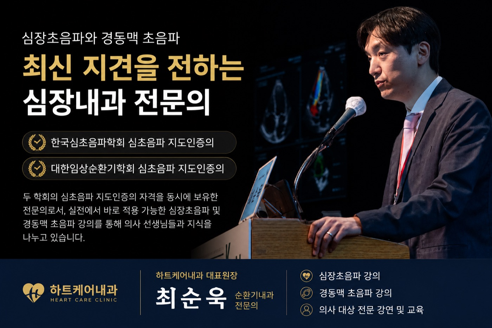
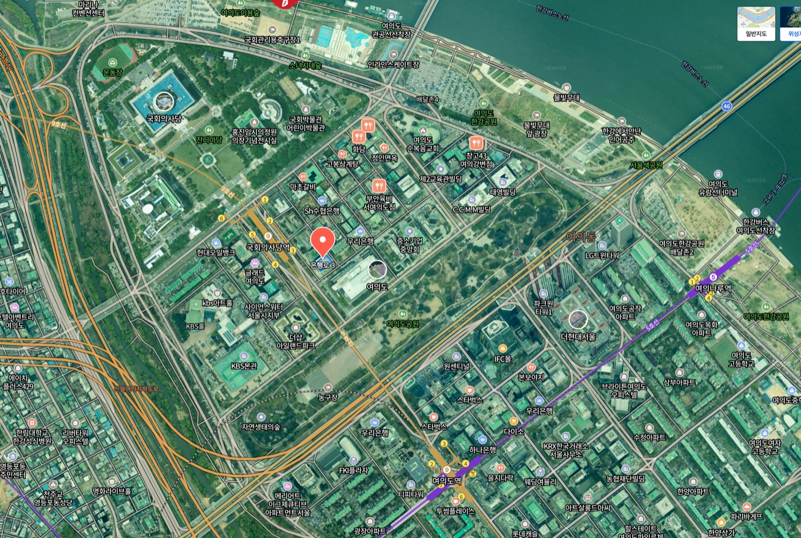

심장, 하나만 봅니다
20여 년 동안 심장 진료 한길을 걸어온 분과전문의가 문진부터 판독까지 직접 합니다. 스치듯 지나가는 증상에서도 원인을 찾아냅니다.

당신의 심장에게, 평생 주치의를.
심장 진료에만 20여 년. 대학병원 순환기내과 교수 출신 전문의가
첫 상담부터 정밀검사, 꾸준한 관리까지 한곳에서 함께합니다.
365일, 심장 혈관만 생각하는
하트케어내과하트케어내과의 약속
20여 년 동안 심장 진료 한길을 걸어온 분과전문의가 문진부터 판독까지 직접 합니다. 스치듯 지나가는 증상에서도 원인을 찾아냅니다.
정밀 심초음파·운동부하·홀터·혈액검사를 원내에서 당일 진행합니다. 큰 병원의 긴 대기 없이, 필요한 답을 빠르게 드립니다.
진료 동선과 대기 공간, 검사실의 프라이버시까지 설계 단계부터 환자의 안정을 기준으로 준비하고 있습니다.
의료진 소개
심장내과(순환기내과) 전문의 · 심장초음파 지도인증의
심장 진료 한길 20여 년. 검사와 판독, 진료와 꾸준한 관리까지 원장이 직접 합니다.
KBS·SBS·TV조선·MBN 등 다수 방송에서 심근경색·심부전·고혈압을 자문하고, 의사들을 대상으로 심장초음파를 강의합니다.
내과 전문의를 취득한 뒤, 대학병원 심장내과에서 임상강사 수련을 추가로 거치고 시험을 통과해야 얻는 세부(분과) 전문의 자격입니다.
검사를 시행하는 수준을 넘어, 충분한 검사 경험과 학회 교육 이수·인증 시험·강의 능력 검증까지 모두 통과한 의사에게 학회가 공식적으로 부여하는 자격입니다.
진료분야
혈관과 심장 근육, 판막의 문제를 다룹니다
심장에 혈액을 보내는 관상동맥이 좁아지거나 막히는 질환입니다.
심장의 펌프 힘이 약해져 몸 곳곳에 혈액이 부족해지는 상태입니다.
판막의 협착·역류, 심방·심실중격결손 등 구조적 문제를 진단합니다.
맥박의 리듬이 흐트러지는 모든 문제를 다룹니다
심장이 빠르고 불규칙하게 뛰어 뇌졸중 위험을 높이는 부정맥입니다.
맥박이 지나치게 느려져 뇌와 전신의 혈류가 부족해지는 상태입니다.
맥이 건너뛰는 조기수축부터 인공심박동기 정기 점검까지 관리합니다.
심장을 위협하는 위험인자를 꾸준히 관리합니다
증상 없이 혈관을 상하게 하는, 심혈관 질환의 가장 큰 원인입니다.
콜레스테롤·중성지방이 쌓여 혈관을 좁히는 질환입니다.
혈당과 대사 이상은 심장 질환과 떼어 볼 수 없습니다. 함께 진료합니다.
정밀검사 · 대학병원급 장비
검사를 위해 다른 병원을 오가지 않도록, 심장 진단에 필요한 장비를 원내에 갖췄습니다. 각 검사를 눌러 자세히 확인하세요.
장비 사진은 실제 도입 기종이며, 기종은 개원 시점에 조정될 수 있습니다.
공간 · 지금 짓고 있습니다
여의도 237㎡ 공간을 접수부터 검사·수납까지 한 방향으로 흐르도록 설계하고 있습니다. 각 공간을 눌러 위치와 설계 원칙을 확인하세요.

창가의 자연 채광과 낮은 밀도로, 기다리는 시간까지 편안하게.
설계 보기 →
접수 한 곳에서 대기·검사·처치까지 한눈에 관리됩니다.
설계 보기 →
충분한 상담을 위한 독립 진료실과 별도 상담실.
설계 보기 →
대학병원급 검사 인프라를 프라이버시 존에 모았습니다.
설계 보기 →공간 이미지는 설계 방향을 보여주는 연출 이미지이며, 완공 후 실제 사진으로 교체됩니다.
진료안내
개원 전 예정 시간표입니다. 확정 시간은 개원 안내와 함께 공지됩니다.
| 평일 (월–금) | 09:00 – 18:00 |
|---|---|
| 토요일 | 09:00 – 13:00 |
| 점심시간 | 13:00 – 14:00 (평일) |
| 일요일 · 공휴일 | 휴진 |
모든 진료는 대표원장이 직접 합니다.
오시는길 · 문의
서울 영등포구 은행로 3 (여의도동) 삼희익스콘벤처타워 2층 · 2026년 8월 개원 예정

지도 크게 보기 ↗국회의사당역(9호선)
3번 출구 · 도보 1분
여의도역(5·9호선) 3번 출구에서는 여의도공원을 지나 도보 10분입니다.
익스콘벤처타워
지하주차장 이용
초진·정밀검사는 진료가 길어질 수 있어 대중교통을 권장드립니다.
Why 하트케어내과
대학병원 심장 검사는 예약에만 수 주가 걸리고, 접수·대기·검사·수납으로 반나절이 듭니다. 하트케어내과는 국회의사당역 3번 출구에서 도보 1분, 건물 지하주차장까지 갖춰 출근길이나 점심시간에도 대학병원급 검사를 받을 수 있습니다.
국회의사당역 도보 1분 · 지하주차대학병원에서는 심초음파 검사일과 판독·진료일이 나뉘어 최소 2~3회를 방문해야 합니다. 하트케어내과는 대학병원 교수 출신 전문의가 심초음파·홀터·혈액검사를 원내에서 당일 시행하고, 그 자리에서 판독과 진료까지 마칩니다.
당일 검사 · 당일 판독 · 당일 진료일반내과는 심전도·혈압 위주로, 협심증·판막·부정맥의 정밀 감별에는 한계가 있습니다. 심장내과 분과전문의이자 심초음파 지도인증의가 정밀 심초음파와 운동부하 검사로 초기 신호까지 잡아냅니다.
분과전문의 · 심초음파 지도인증의